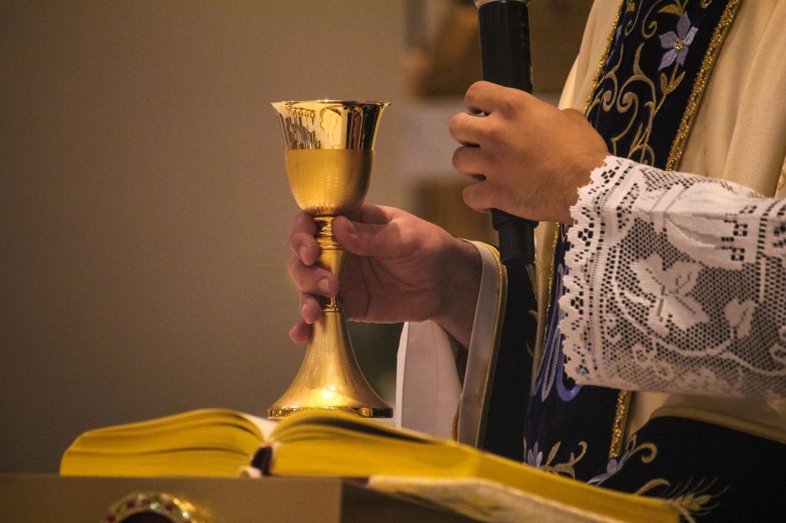

In the autumn of 2024, as the parish marked its seventieth anniversary, the Pastoral Council asked a simple question: what should St. Columba look like at seventy-five? More than four hundred parishioners answered, through listening sessions in six languages, a survey, and conversations after every Mass for two months. This plan is what we heard, distilled into five priorities. It was approved by Fr. Moreau and the Pastoral Council in January 2025 and covers three years. Each priority has three goals and a measure so that the parish can see, honestly, whether it is getting there.
Our vision
“By 2028, St. Columba will be a parish where every person who walks through the door is known by name, formed in the faith, and sent out to serve East York in the love of Christ.”
Vision statement, Pastoral Plan 2025–2028
Five priorities
What we will do
The order below is not a ranking. Worship comes first because everything else flows from the altar.
1. Worship: celebrate the liturgy with reverence and joy

- Train and commission 40 new liturgical ministers (lectors, extraordinary ministers of Communion, ushers, servers) by June 2026, so that no ministry depends on the same twelve people.
- Establish a second choir for the 9:00 AM Mass by Advent 2026, and grow the youth choir to 25 singers.
- Add a monthly Mass in Tamil by 2027 and provide printed worship aids in all six languages for Christmas and Easter.
Measure: the number of active liturgical ministers in the parish database, reported to the Pastoral Council each June, and the October count of Mass attendance required by the Archdiocese.
2. Formation: help every age grow in faith
- Offer at least one adult formation series every Advent and Lent and run the Alpha course every autumn, with a goal of 120 adults participating each year.
- Re-launch the parish's sacramental preparation for First Communion and Confirmation with a family-based model by September 2026, so that parents are formed alongside their children.
- Ensure every catechist and youth leader completes the Archdiocese's Formation for Discipleship foundations course by 2027.
Measure: annual participation counts for adult programs; percentage of catechists with completed formation, reported by Sr. Agnes each September.
3. Community: know one another by name

- Build a team of welcomers so that a greeter is at every door at every weekend Mass, and every newly registered family receives a personal visit or call within a month.
- Hold one parish-wide social event each season that brings the language communities together, beginning with a multicultural food festival in June 2025.
- Launch a seniors' outreach so that every homebound parishioner is visited at least monthly and receives Communion if they wish.
Measure: new registrations per year and the share contacted within 30 days; the number of homebound parishioners on the visiting list and visits logged.
4. Outreach: serve East York
- Expand the St. Vincent de Paul food cupboard to open twice a week and increase households served from 40 to 60 a month by 2027.
- Sponsor one refugee family through the Office for Refugees of the Archdiocese of Toronto in each year of the plan.
- Partner with the two parish schools and a local seniors' residence on a yearly service project involving the youth group.
Measure: households served and food distributed, from the St. Vincent de Paul conference's annual report; refugee families welcomed; youth service hours logged.
5. Stewardship: care for what we have been given
- Increase the share of households giving through Pre-Authorized Giving from 22 per cent to 40 per cent by 2028, so that parish income is stable through the summer and winter.
- Complete the church roof replacement in 2027 from the capital reserve without a special campaign, and convert all lighting to LED.
- Publish a plain-language financial report every February and post Pastoral and Finance Council minutes within two weeks of each meeting.
Measure: PAG participation rate and capital reserve balance, from the Finance Council's annual report; minutes posted on time.
How you can help
Give an hour a month
Most of the goals above need people more than money. Welcomers, lectors, drivers for seniors, food cupboard volunteers and catechists are the plan's engine.
Sign up for PAG
Pre-Authorized Giving takes five minutes to set up and means the parish can plan. You choose the amount; you can change it any time.
Come to a formation series
The plan will only work if parishioners keep learning. Join Alpha this autumn or the Lenten series, and bring a neighbour.
Keeping ourselves honest
The Pastoral Council reviews progress on every goal each June and reports at the annual parish meeting, where any parishioner may ask questions. A one-page scorecard appears in the bulletin every September. Goals that are not working will be changed rather than quietly forgotten. Questions or suggestions may go to any council member or to office@stcolumbatoronto.ca with "Pastoral Plan" in the subject line. See parish councils for how the council works.
Read the full plan
The complete document runs to twelve pages, with the consultation findings, the theology behind each priority, and the full list of measures. Printed copies are available at the back of the church.
Contact the parish office for a copy of the Pastoral Plan 2025–2028.